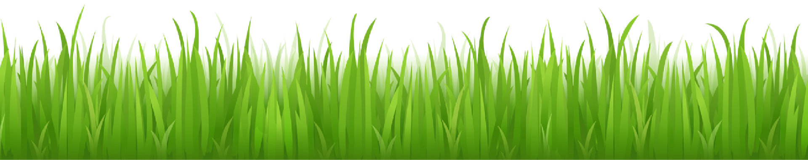

I Have Found What You Are Like
e. e. cummings
i have found what you are like
the rain,
(Who feathers frightened fields
with the superior dust-of-sleep. wields
easily the pale club of the wind
and swirled justly souls of flower strike
the air in utterable coolness
deeds of green thrilling light
with thinned
newfragile yellows
lurch and.press
--in the woods
which
stutter
and
sing
And the coolness of your smile is
stirringofbirds between my arms;but
i should rather than anything
have(almost when hugeness will shut
quietly)almost,
your kiss
